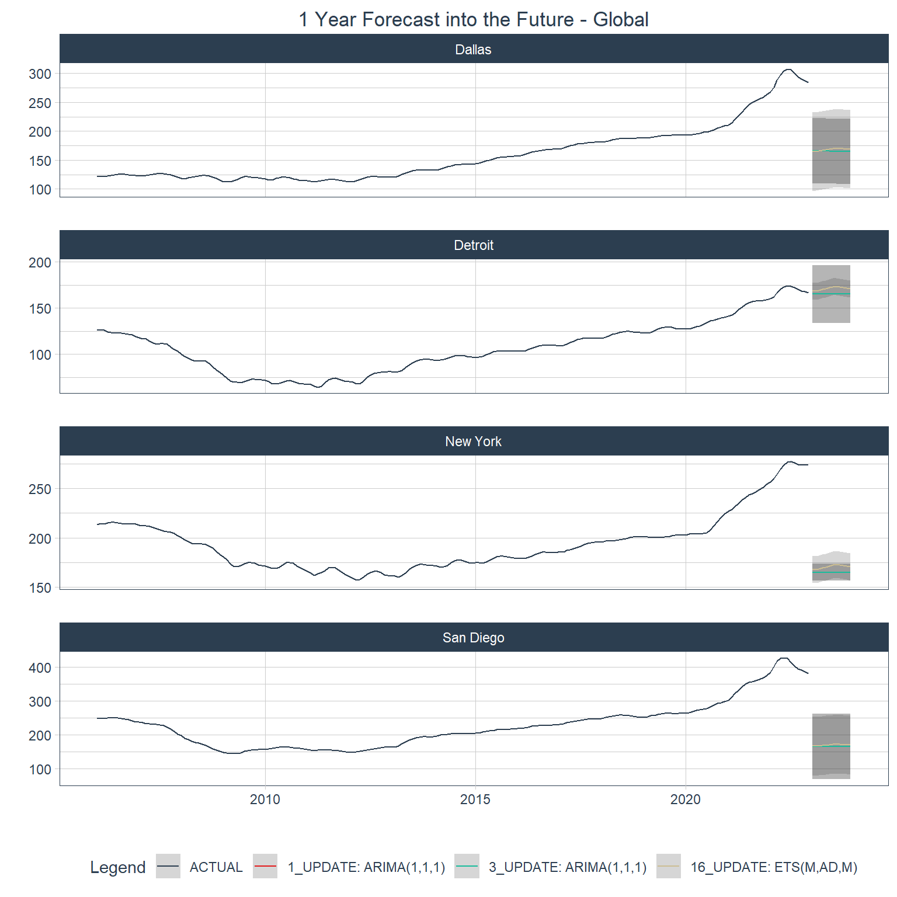

Forecasting with {modeltime} - Part IV
Tuning many global models
Review
Up to this point in the project I acquired data in Forecasting with {modeltime} - Part I, performed some standard time series analysis in Forecasting with {modeltime} - Part II, and explored the two types of modeling processes – global and iterative – for multiple time series in Forecasting with {modeltime} - Part III. In this post I’m going to tune multiple models using a global process to select a small number of them that I will run iteratively in the final post. I’ll incorporate some of the other variables in the data set that I gathered in the the first post to forecast the Case-Shiller Home Price Index (HPI). Since I’ll be creating variations of model specifications, I’m also going to use functions from the Tidymodels workflowsets (Kuhn and Couch 2023) package to run the models. As before I’ll be using modeltime (Dancho 2023), timetk (Dancho and Vaughan 2023), tidymodels (Kuhn and Wickham 2020), tidyverse (Wickham et al. 2019), and gt (Iannone et al. 2024). Before jumping in, below I show a glimpse of the data that I’ll be using.
| Name | econ_data |
| Number of rows | 816 |
| Number of columns | 16 |
| _______________________ | |
| Column type frequency: | |
| character | 1 |
| Date | 1 |
| numeric | 14 |
| ________________________ | |
| Group variables | None |
Variable type: character
| skim_variable | n_missing | complete_rate | min | max | empty | n_unique | whitespace |
|---|---|---|---|---|---|---|---|
| city | 0 | 1 | 6 | 9 | 0 | 4 | 0 |
Variable type: Date
| skim_variable | n_missing | complete_rate | min | max | median | n_unique |
|---|---|---|---|---|---|---|
| date | 0 | 1 | 2006-01-01 | 2022-12-01 | 2014-06-16 | 204 |
Variable type: numeric
| skim_variable | n_missing | complete_rate | mean | sd | p0 | p25 | p50 | p75 | p100 | hist |
|---|---|---|---|---|---|---|---|---|---|---|
| hpi | 0 | 1 | 172.19 | 64.38 | 64.47 | 122.40 | 168.06 | 203.87 | 427.80 | ▆▇▃▁▁ |
| unemp_rate | 0 | 1 | 6.50 | 2.93 | 2.80 | 4.20 | 5.60 | 8.30 | 23.90 | ▇▃▁▁▁ |
| age_lt_18 | 0 | 1 | 0.24 | 0.02 | 0.19 | 0.22 | 0.24 | 0.25 | 0.30 | ▂▇▇▅▂ |
| age_18_35 | 0 | 1 | 0.25 | 0.02 | 0.20 | 0.24 | 0.25 | 0.26 | 0.31 | ▁▃▇▃▁ |
| age_36_65 | 0 | 1 | 0.39 | 0.02 | 0.33 | 0.38 | 0.39 | 0.40 | 0.44 | ▁▃▇▂▁ |
| age_gt_65 | 0 | 1 | 0.12 | 0.02 | 0.07 | 0.11 | 0.12 | 0.14 | 0.19 | ▃▆▇▅▁ |
| educ_hs_less | 0 | 1 | 0.33 | 0.03 | 0.24 | 0.31 | 0.33 | 0.35 | 0.40 | ▁▃▇▇▃ |
| educ_college | 0 | 1 | 0.38 | 0.03 | 0.31 | 0.36 | 0.38 | 0.40 | 0.48 | ▂▇▆▃▁ |
| educ_grad | 0 | 1 | 0.10 | 0.02 | 0.05 | 0.08 | 0.10 | 0.11 | 0.16 | ▃▇▇▅▁ |
| status_married | 0 | 1 | 0.40 | 0.02 | 0.32 | 0.39 | 0.40 | 0.41 | 0.45 | ▁▁▇▇▂ |
| status_nev_mar | 0 | 1 | 0.27 | 0.03 | 0.19 | 0.25 | 0.27 | 0.29 | 0.34 | ▂▅▇▇▂ |
| status_other | 0 | 1 | 0.33 | 0.02 | 0.28 | 0.32 | 0.33 | 0.34 | 0.45 | ▃▇▃▁▁ |
| hispanic | 0 | 1 | 0.22 | 0.11 | 0.02 | 0.17 | 0.25 | 0.30 | 0.42 | ▅▁▆▇▂ |
| population | 0 | 1 | 8471150.57 | 6499655.47 | 2834025.25 | 4050215.00 | 5109791.12 | 10555276.77 | 20320876.00 | ▇▃▁▁▃ |
Splitting the data
The data split object for a global modeling process is different than that for an iterative modeling process. For the global modeling process I’ll use timetk::time_series_split() . Below is a look at how the data are split.
Choosing algorithms
As with selecting the cities in the analysis I’m interested in getting a little variation in the algorithms to see how they perform and I want to vary the parameters a bit. To get something of a traditional flavor I’m going to run ARIMA models with three different model formulas:
1) hpi ~ date
2) hpi ~ date + unemployment
3) hpi ~ date + unemployment + demographic variables
I’ll also have four specifications for the algorithms. One will be the default auto-ARIMA and the other three will be auto-ARIMA specifications with different season lengths. This will give me twelve different ARIMA models (3 recipes x 4 algorithm specifications).
In much the same way I will have different sets of recipes and model specifications for the following:
an exponential smoothing algorithm (including a Holt-Winters specification) to allow for weighting the periods exponentially
an STLM algorithm using an ARIMA engine (STLM: Seasonal Trend Decomposition using Loess with Multiple seasonal periods)
A feed-forward, auto-regressive neural-net algorithm because these tend to have high predictive ability
Some of these algorithms allow for covariates and others (like exponential smoothing) do not. In the end I will have 90 model specifications to test. In order to do speed up the processing I’ll employ modeltime’s parallel processing feature.
Building workflow objects
Here I’ll write the three recipes for the ARIMA models and one for the auto-regressive neural-net model. The exponential smoothing and STLM models will both use the first of the three ARIMA recipes as neither of these algorithms can handle covariates.
You might notice in the code below that I exclude some of the demographic variables like “educ_hs_less” for the third ARIMA recipe. I exclude these variables because I found that including all of the variables for a demographic variable group causes the functions to error out much in the same way that including all of the categories of a factor variable would. Initially I did not expect that I would need contrasts considering that the variable values are ratios, but it seems that the fact that the sum of the ratios for a given variable group, e.g., education, is 1 for each row and for each variable group creates a need for contrasts in the regression (this is my guess).
Writing recipes
Some of the code chunks below contain explanations. Lines in explanations will be marked with encircled numbers. Just hover over those numbers to see the corresponding explanation.
Code
arima_rec1 <- recipe(hpi ~ date, data = training(econ_splits))
arima_rec2 <- recipe(
hpi ~ date + unemp_rate,
data = training(econ_splits)
) |>
step_center(all_numeric_predictors()) |>
step_scale(all_numeric_predictors()) |>
step_lag(unemp_rate, lag = c(1, 3, 6))
rec3_dep_vars <- econ_data |>
select(date, unemp_rate:population) |>
select(!c(educ_hs_less, status_married, age_36_65)) |>
names() |>
str_flatten(collapse = " + ")
arima_rec3 <- recipe(
formula(str_c("hpi", rec3_dep_vars, sep = " ~ ")),
data = training(econ_splits)
) |>
step_center(all_numeric_predictors()) |>
step_scale(all_numeric_predictors()) |>
step_lag(unemp_rate, population, lag = c(1, 3, 6))
nnet_rec <- recipe(
hpi ~ .,
data = training(econ_splits)
) |>
update_role(city, new_role = "ID") |>
step_center(all_numeric_predictors()) |>
step_scale(all_numeric_predictors()) |>
step_timeseries_signature(date) |>
step_nzv(all_predictors())- 1
- Write a base recipe to regress HPI on the date variable
- 2
- Write a recipe formula that adds unemployment as an explanatory variable
- 3
- Mean-center all numeric predictors (only “unemployment rate” here)
- 4
- Scale all numeric predictors to have a mean of “0” and a standard error of 1
- 5
- Create lag variables for “unemployment rate” and “population”
- 6
- Get the names of all the economic and demographic variables from the data set and concatenate them into a formula string to make the right side of a regression formula, i.e., “var1 + var2 + var3…”
- 7
- Because the “outcome ~ .” notation is being used, the “city” variable is included in the “.”, meaning it will be treated as an explanatory variable. This step changes the role of that variable from “predictor” to an ID variable, which modeling workflows will exclude from sets of predictors.
- 8
- Add a set of variables related to the date such as day of the week of the date, day of the month, number of the week of the year, etc.
- 9
- Remove any variables with zero or near-zero variance. An example of this would be a variable indicating the day of the month. Since this is monthly data, all values would be “1”, i.e., the first day of the month.
Here is a reminder of what a recipe looks like. This is the neural-net recipe.
And this is the data set that gets created by that recipe.
| city | date | unemp_rate | age_lt_18 | age_18_35 | age_36_65 | age_gt_65 | educ_hs_less | educ_college | educ_grad | status_married | status_nev_mar | status_other | hispanic | population | hpi | date_index.num | date_year | date_year.iso | date_half | date_quarter | date_month | date_month.xts | date_month.lbl | date_wday | date_wday.xts | date_wday.lbl | date_qday | date_yday | date_mweek | date_week | date_week.iso | date_week2 | date_week3 | date_week4 |
|---|---|---|---|---|---|---|---|---|---|---|---|---|---|---|---|---|---|---|---|---|---|---|---|---|---|---|---|---|---|---|---|---|---|---|
| Dallas | 2006-01-01 | -0.5318986 | 1.9837898 | 1.2244300 | -2.1179446 | -1.4144536 | 1.4132488 | -1.9352723 | -1.0007519 | 0.7138177 | -1.8445270 | 1.9655339 | 0.2421831 | -0.4128166 | 121.9108 | 1136073600 | 2006 | 2005 | 1 | 1 | 1 | 0 | January | 1 | 0 | Sunday | 1 | 1 | 5 | 1 | 52 | 1 | 1 | 1 |
| San Diego | 2006-01-01 | -0.8651452 | -0.2639636 | -0.5419655 | -0.1248023 | 0.7104276 | -0.6271533 | 1.1018075 | -0.5165046 | -0.8376538 | -0.5633246 | 1.4600357 | 0.4759810 | -0.8614678 | 247.4588 | 1136073600 | 2006 | 2005 | 1 | 1 | 1 | 0 | January | 1 | 0 | Sunday | 1 | 1 | 5 | 1 | 52 | 1 | 1 | 1 |
| New York | 2006-01-01 | -0.5652232 | 0.4335013 | -0.7101494 | -0.3141128 | 0.2439870 | 1.6923074 | -1.9655377 | 0.3044405 | -0.5241964 | -0.2666740 | 0.7951381 | -0.1053321 | 1.5314733 | 213.4958 | 1136073600 | 2006 | 2005 | 1 | 1 | 1 | 0 | January | 1 | 0 | Sunday | 1 | 1 | 5 | 1 | 52 | 1 | 1 | 1 |
| Detroit | 2006-01-01 | 0.1679193 | 1.1233044 | -1.7256753 | -0.3452176 | 0.4389330 | 1.7816712 | -1.6797175 | -1.2833046 | -0.7472264 | -1.1655961 | 2.2179937 | -1.6335110 | -0.6156132 | 126.6627 | 1136073600 | 2006 | 2005 | 1 | 1 | 1 | 0 | January | 1 | 0 | Sunday | 1 | 1 | 5 | 1 | 52 | 1 | 1 | 1 |
| Dallas | 2006-02-01 | -0.4985739 | 2.4431155 | 1.3332951 | -2.2373194 | -1.7310508 | 0.7705532 | -0.9746432 | -1.6783801 | 1.0008565 | -1.5342766 | 1.3033739 | 0.4153678 | -0.4092439 | 121.3285 | 1138752000 | 2006 | 2006 | 1 | 1 | 2 | 1 | February | 4 | 3 | Wednesday | 32 | 32 | 5 | 5 | 5 | 1 | 2 | 1 |
Specifying models
In this next step I’ll specify the model objects for each algorithm along with the search grids for their various hyperparameters. I chose to keep only some of the combinations of the exponential smoothing specifications to limit the number of models being run that are likely to fail.
Code
arima_default <- arima_reg() |> set_engine("auto_arima")
arima_spec_grid <- tibble(seasonal_period = seq(9, 18, by = 3)) |>
create_model_grid(
f_model_spec = arima_reg,
engine_name = "auto_arima",
mode = "regression"
)
ets_default <- exp_smoothing() |> set_engine("ets")
set.seed(40)
alpha_vals <- runif(5, 0.01, 0.5) *
sample(c(1, 0.1, 0.01, .001), 5, replace = TRUE)
beta_vals <- runif(5, 0.01, 0.2) * sample(c(1, 0.1, 0.01), 5, replace = TRUE)
gamma_vals <- map_dbl(
alpha_vals,
\(x) runif(1, 0, 1 - x)
)
ets_spec_grid <- expand_grid(
smooth_level = alpha_vals[-2],
smooth_seasonal = gamma_vals[2:3],
seasonal_period = seq(9, 18, by = 3)
) |>
create_model_grid(
f_model_spec = exp_smoothing,
engine_name = "ets",
mode = "regression",
error = "auto",
trend = "auto",
season = "auto",
smooth_trend = beta_vals[3]
)
stlm_spec_grid <- expand_grid(
seasonal_period_2 = c(NULL, seq(6, 18, by = 3))
) |>
create_model_grid(
f_model_spec = seasonal_reg,
engine_name = "stlm_arima",
mode = "regression",
seasonal_period_1 = 12
)
nnet_default <- nnetar_reg() |> set_engine("nnetar")
nnet_spec_grid <- expand_grid(
non_seasonal_ar = 1:3,
hidden_units = 3:5,
num_networks = c(20, 25),
penalty = c(0.2, 0.25)
) |>
create_model_grid(
f_model_spec = nnetar_reg,
engine_name = "nnetar",
mode = "regression",
seasonal_period = 12,
epochs = 100,
seasonal_ar = 1
)- 1
- Specify an ARIMA regression model using the “auto_arima” engine with all default arguments
- 2
-
Create a 1-column
tibble(data frame) with theseasonal_periodargument set to vary as 9, 12, 15, and 18 (months). - 3
-
create_model_grid()allows one to set static arguments to combine them with the arguments that vary. This is meant to serve a similar purpose astune::tune_grid()from Tidymodels. - 4
-
Set a random seed for reproducibility and generate vectors for the
smooth_level,smooth_trend, andsmooth_seasonalarguments. Inforecast::ets()these arealpha,beta, andgammarespectively. - 5
-
Use
tidyr::expand_grid()to get all combinations of the included vectors.
Below is what a model grid looks like.
# A tibble: 5 × 4
smooth_level smooth_seasonal seasonal_period .models
<dbl> <dbl> <dbl> <list>
1 0.0345 0.569 9 <spec[+]>
2 0.0345 0.569 12 <spec[+]>
3 0.0345 0.569 15 <spec[+]>
4 0.0345 0.569 18 <spec[+]>
5 0.0345 0.763 9 <spec[+]>This is a glimpse of a model specification.
Exponential Smoothing State Space Model Specification (regression)
Main Arguments:
seasonal_period = 9
error = auto
trend = auto
season = auto
smooth_level = 0.0344955188313033
smooth_trend = 0.0247416579537094
smooth_seasonal = 0.569256213388705
Computational engine: ets Building workflowsets
A workflowset is, you guessed it, a set of workflows. Mechanically it is a very convenient wrapper that can put together different combinations of recipes (pre-processors) and models. I don’t want to mix all of my recipes with all of my models, however. So, in this step I’ll make sets of individuals that combine the appropriate sets of recipes and models then I’ll bind all of them together at the end.
Code
arima_wfset <- workflow_set(
preproc = list(
base_rec = arima_rec1,
econ_rec = arima_rec2,
demog_rec = arima_rec3
),
models = c(
arima_default = list(arima_default),
arima_spec = arima_spec_grid$.models
),
cross = TRUE
)
ets_wfset <- workflow_set(
preproc = list(base_rec = arima_rec1),
models = c(ets_default = list(ets_default), ets_spec = ets_spec_grid$.models),
cross = TRUE
)
stlm_wfset <- workflow_set(
preproc = list(base_rec = arima_rec1),
models = c(stlm_spec = stlm_spec_grid$.models),
cross = TRUE
)
nnet_wfset <- workflow_set(
preproc = list(nnet_rec = nnet_rec),
models = c(
nnet_default = list(nnet_default),
nnet_spec = nnet_spec_grid$.models
),
cross = TRUE
)- 1
-
Call
workflowsets::workflowset() - 2
-
Provide a named list of recipes to use in the
workflowset; naming the elements at this stage makes it easier to match up the elements of the final table containing the trained models with the original recipes and model specifications - 3
- Provide a named list of model specifications by pulling the “.models” column from each grid
- 4
- Indicate that all recipes should be combined with all model specifications
The individual specifications in the final model table will be named using a combination of the name of the recipe and the name of the model specification given in the respective lists with a count added whenever there are duplicate names. For example, arima_spec_grid has four model specifications in it. The ones that are combined with the first ARIMA recipe (named “base_rec”) will be named BASE_REC_ARIMA_SPEC1, BASE_REC_ARIMA_SPEC2, BASE_REC_ARIMA_SPEC3, and BASE_REC_ARIMA_SPEC4.
With all of the model-specific workflow sets created, now it’s time to put them all together.
# A workflow set/tibble: 5 × 4
wflow_id info option result
<chr> <list> <list> <list>
1 base_rec_arima_default <tibble [1 × 4]> <opts[0]> <list [0]>
2 base_rec_arima_spec1 <tibble [1 × 4]> <opts[0]> <list [0]>
3 base_rec_arima_spec2 <tibble [1 × 4]> <opts[0]> <list [0]>
4 base_rec_arima_spec3 <tibble [1 × 4]> <opts[0]> <list [0]>
5 base_rec_arima_spec4 <tibble [1 × 4]> <opts[0]> <list [0]>That’s all the heavy lifting. Now it’s time to let the computer processors do their part and run the models.
Fitting the models
Code
avail_cores <- unname(parallelly::availableCores() - 1)
modulo_vec <- sapply(avail_cores:2, \(x) nrow(hpi_wfset) %% x)
num_cores <- max(
max(which(modulo_vec == max(modulo_vec))),
max(which(modulo_vec == 0))
) + 1
cl <- parallel::makePSOCKcluster(num_cores)
doParallel::registerDoParallel(cl)
invisible(
parallel::clusterCall(cl, function(x) .libPaths(x), .libPaths())
)
invisible(parallel::clusterEvalQ(cl, set.seed(500)))
hpi_mods_start <- proc.time()
hpi_mods <- hpi_wfset |>
modeltime_fit_workflowset(
data = training(econ_splits),
control = control_fit_workflowset(verbose = FALSE, allow_par = TRUE)
)
hpi_mods_end <- proc.time()
parallel::stopCluster(cl)
rm(cl)- 1
- Get the number of cores available and leave one out for common tasks like running the operating system
- 2
- Calculate the number of cores to use in order to maximize efficiency
- 3
-
Set up the cluster for parallel processing; I copied this code from
modeltime::parallel_start() - 4
- Set the same random seed for each node
- 5
-
Call the
workflowsetobject containing all the workflows to run - 6
-
Use
modeltime::modeltime_fit_workflowset()to fit all of the models - 7
- Use the training portion of the split object to train the models
- 8
- Set some controls for the model fitting function
- 9
- Stop the parallel cluster from running
# A tibble: 90 × 3
.model_id .model .model_desc
<int> <list> <chr>
1 1 <workflow> BASE_REC_ARIMA_DEFAULT
2 2 <workflow> BASE_REC_ARIMA_SPEC1
3 3 <workflow> BASE_REC_ARIMA_SPEC2
4 4 <workflow> BASE_REC_ARIMA_SPEC3
5 5 <workflow> BASE_REC_ARIMA_SPEC4
6 6 <workflow> ECON_REC_ARIMA_DEFAULT
7 7 <workflow> ECON_REC_ARIMA_SPEC1
8 8 <workflow> ECON_REC_ARIMA_SPEC2
9 9 <workflow> ECON_REC_ARIMA_SPEC3
10 10 <workflow> ECON_REC_ARIMA_SPEC4
# ℹ 80 more rowsCode
| time_metric | seconds |
|---|---|
| user.self | 1.48 |
| sys.self | 0.26 |
| elapsed | 83.06 |
About 83.06 seconds elapsed during model-fitting with parallel processing. Not too bad. Unfortunately, though, some of the models failed (I suppressed error printing). So, before calibrating the models I’m going to drop those from the model output data set. But first I’ll investigate the model failures a little.
Investigating failed models
Here’s a look at some of the models that failed.
Code
| .model_id | .model_desc | mod_fail |
|---|---|---|
| 1 | BASE_REC_ARIMA_DEFAULT | FALSE |
| 2 | BASE_REC_ARIMA_SPEC1 | FALSE |
| 3 | BASE_REC_ARIMA_SPEC2 | FALSE |
| 33 | BASE_REC_ETS_SPEC17 | TRUE |
| 34 | BASE_REC_ETS_SPEC18 | TRUE |
| 35 | BASE_REC_ETS_SPEC19 | TRUE |
Now I want to see the distinct names of the recipes and algorithms (model specifications) that failed.
Code
failure_spec_df <- mod_fail_df |>
filter(mod_fail) |>
separate_wider_delim(
.model_desc,
delim = "_",
names = c("rec_name", "rec", "algo", "spec")
) |>
separate_wider_regex(spec, patterns = c(spec = "SPEC", spec_num = "\\d+"))
failure_spec_df |> distinct(rec_name, algo, spec) |> gt() |> gt_bold_head()| rec_name | algo | spec |
|---|---|---|
| BASE | ETS | SPEC |
Since the failures occurred with only one algorithm they’ll be easy to isolate. Now I want to get the numbers of the specifications that failed so that I can pull up the details on those specifications.
Code
| smooth_level | n |
|---|---|
| 6.680868e-05 | 8 |
Overall there were 8 out of 32 failed exponential smoothing models. That’s not terrible. I’m going to remove these specifications from the trained model data set and move on to model evaluation.
Model evaluation
To evaluate the models first I need to calibrate them. I’ll remove the failed models, calibrate the successful ones, and store accuracy tables here. Below are the 10 best-performing global models, i.e., the ones that performed best on the batched series with all four cities. I defined “best” as the models with the lowest SMAPE (Scaled Mean Average Percent Error) values.
I broke up the code for calibrating the models below into two separate chunks to keep the file sizes of cached files a bit smaller. I cached the output to make the page easier to render. This step of splitting up the modeltime_table for calibration is not typically necessary.
Code
hpi_mod_accuracy <- hpi_mod_calib |>
modeltime_accuracy() |>
drop_na(.type)
hpi_local_mod_accuracy <- hpi_mod_calib |>
modeltime_accuracy(acc_by_id = TRUE) |>
drop_na(.type)
best_global_table <- hpi_mod_accuracy |>
slice_min(smape, n = 10)
best_local_table <- hpi_local_mod_accuracy |>
group_by(city) |>
slice_min(smape, n = 3)
best_global_table |>
table_modeltime_accuracy(
.interactive = FALSE,
.title = "Global Accuracy"
) |>
gt_bold_head() |>
tab_style(
style = cell_text(weight = "bold"),
locations = cells_title()
)| Global Accuracy | ||||||||
| .model_id | .model_desc | .type | mae | mape | mase | smape | rmse | rsq |
|---|---|---|---|---|---|---|---|---|
| 16 | BASE_REC_ETS_DEFAULT | Test | 19.29 | 6.22 | 0.18 | 6.59 | 28.08 | 0.96 |
| 1 | BASE_REC_ARIMA_DEFAULT | Test | 20.79 | 7.14 | 0.19 | 7.37 | 29.50 | 0.95 |
| 3 | BASE_REC_ARIMA_SPEC2 | Test | 20.79 | 7.14 | 0.19 | 7.37 | 29.50 | 0.95 |
| 30 | BASE_REC_ETS_SPEC14 | Test | 20.81 | 7.48 | 0.19 | 7.60 | 28.89 | 0.95 |
| 22 | BASE_REC_ETS_SPEC6 | Test | 20.80 | 7.48 | 0.19 | 7.60 | 28.87 | 0.95 |
| 46 | BASE_REC_ETS_SPEC30 | Test | 22.16 | 7.53 | 0.21 | 7.82 | 31.18 | 0.95 |
| 42 | BASE_REC_ETS_SPEC26 | Test | 22.31 | 7.77 | 0.21 | 8.00 | 31.01 | 0.95 |
| 53 | BASE_REC_STLM_SPEC5 | Test | 30.98 | 9.75 | 0.29 | 10.59 | 43.56 | 0.94 |
| 49 | BASE_REC_STLM_SPEC1 | Test | 31.20 | 9.81 | 0.29 | 10.68 | 43.87 | 0.93 |
| 52 | BASE_REC_STLM_SPEC4 | Test | 32.10 | 10.02 | 0.30 | 10.94 | 45.27 | 0.93 |
Next is a table with the best 3 models calibrated to each city.
Code
best_local_table|>
table_modeltime_accuracy(
.interactive = FALSE,
.title = "Accuracy by City"
) |>
gt_bold_head() |>
tab_style(
style = cell_text(weight = "bold"),
locations = cells_title()
) |>
tab_style(
style = list(cell_text(weight = "bold"), cell_fill(color = "lightgray")),
locations = cells_group()
) |>
tab_style(
style = cell_borders(
sides = c("top", "bottom"),
weight = px(2),
style = ("solid")
),
locations = cells_group()
)| Accuracy by City | ||||||||
| .model_id | .model_desc | .type | mae | mape | mase | smape | rmse | rsq |
|---|---|---|---|---|---|---|---|---|
| Dallas | ||||||||
| 12 | DEMOG_REC_ARIMA_SPEC1 | Test | 13.99 | 5.18 | 2.65 | 5.32 | 15.79 | 0.80 |
| 14 | DEMOG_REC_ARIMA_SPEC3 | Test | 14.19 | 5.24 | 2.69 | 5.39 | 15.97 | 0.80 |
| 22 | BASE_REC_ETS_SPEC6 | Test | 20.59 | 7.34 | 3.93 | 7.72 | 24.76 | 0.85 |
| Detroit | ||||||||
| 76 | NNET_REC_NNET_SPEC22 | Test | 2.73 | 1.64 | 1.55 | 1.65 | 3.71 | 0.87 |
| 63 | NNET_REC_NNET_SPEC9 | Test | 2.84 | 1.71 | 1.62 | 1.74 | 3.92 | 0.89 |
| 66 | NNET_REC_NNET_SPEC12 | Test | 2.92 | 1.77 | 1.66 | 1.74 | 4.49 | 0.87 |
| New York | ||||||||
| 1 | BASE_REC_ARIMA_DEFAULT | Test | 3.09 | 1.16 | 1.30 | 1.16 | 4.41 | 0.94 |
| 3 | BASE_REC_ARIMA_SPEC2 | Test | 3.09 | 1.16 | 1.30 | 1.16 | 4.41 | 0.94 |
| 30 | BASE_REC_ETS_SPEC14 | Test | 3.18 | 1.19 | 1.34 | 1.17 | 5.06 | 0.95 |
| San Diego | ||||||||
| 51 | BASE_REC_STLM_SPEC3 | Test | 23.42 | 6.49 | 3.10 | 6.34 | 28.83 | 0.61 |
| 12 | DEMOG_REC_ARIMA_SPEC1 | Test | 35.62 | 9.29 | 4.85 | 9.84 | 39.31 | 0.71 |
| 14 | DEMOG_REC_ARIMA_SPEC3 | Test | 36.77 | 9.58 | 5.01 | 10.16 | 40.32 | 0.71 |
There’s a pretty good mix of models across the two tables including ARIMA, ETS (lots of this one), STLM, and neural-net. Among the ARIMA models there were some with the basic recipe and some with the recipe that included both economic and demographic variables.
Below are plots of forecasts of the test data period for each city using the best 3 global models.
Code
top_3_global <- best_global_table |> slice_min(smape, n = 3) |> pull(.model_id)
hpi_mod_calib |>
filter(.model_id %in% top_3_global) |>
modeltime_forecast(
new_data = testing(econ_splits),
actual_data = econ_data,
conf_by_id = TRUE,
keep_data = TRUE
) |>
group_by(city) |>
plot_modeltime_forecast(
.interactive = FALSE,
.title = "Forecast of Test Data",
.facet_ncol = 1
) +
theme(plot.title = element_text(hjust = 0.5))Just for fun, here are the 5 worst-performing models (global).
| .model_id | .model_desc | .type | mae | mape | mase | smape | rmse | rsq |
|---|---|---|---|---|---|---|---|---|
| 2 | BASE_REC_ARIMA_SPEC1 | Test | 82.07379 | 28.40303 | 0.7639937 | 32.64595 | 100.22516 | 0.0237270639 |
| 4 | BASE_REC_ARIMA_SPEC3 | Test | 81.85927 | 28.93424 | 0.7619969 | 32.63484 | 99.20593 | 0.0005985376 |
| 17 | BASE_REC_ETS_SPEC1 | Test | 81.34845 | 28.53501 | 0.7572419 | 32.31949 | 99.36593 | NA |
| 19 | BASE_REC_ETS_SPEC3 | Test | 81.34845 | 28.53501 | 0.7572419 | 32.31949 | 99.36593 | NA |
| 20 | BASE_REC_ETS_SPEC4 | Test | 81.34845 | 28.53501 | 0.7572419 | 32.31949 | 99.36593 | NA |
Forecasting with global models
Below are forecasts for each city using the top 3 global models.
Code
hpi_refit <- hpi_mod_calib |>
filter(.model_id %in% top_3_global) |>
modeltime_refit(data = econ_data)
hpi_future <- econ_data |>
group_by(city) |>
future_frame(.length_out = 12, .bind_data = FALSE, .date_var = date)
hpi_future_forecast <- hpi_refit |>
modeltime_forecast(
new_data = hpi_future,
actual_data = econ_data,
conf_by_id = TRUE
)
hpi_future_forecast |>
group_by(city) |>
plot_modeltime_forecast(
.interactive = FALSE,
.title = "1 Year Forecast into the Future - Global",
.facet_ncol = 1
) +
theme(plot.title = element_text(hjust = 0.5))
Choosing models for iterative process
For iterative modeling I’m going to use the 10 best global models and the 3 best local models for each city (there’s some overlap in these lists). The specifications that I’m going to use for iterative modeling in the next post are:
Code
| .model_desc |
|---|
| BASE_REC_ETS_DEFAULT |
| BASE_REC_ARIMA_DEFAULT |
| BASE_REC_ARIMA_SPEC2 |
| BASE_REC_ETS_SPEC14 |
| BASE_REC_ETS_SPEC6 |
| DEMOG_REC_ARIMA_SPEC1 |
| DEMOG_REC_ARIMA_SPEC3 |
| NNET_REC_NNET_SPEC22 |
| NNET_REC_NNET_SPEC9 |
| NNET_REC_NNET_SPEC12 |
| BASE_REC_STLM_SPEC3 |